Code
library(tidyverse)
library(patchwork)
library(ggpmisc) # для добавления линии регрессии на графикИсходный код всех необходимых графиков. Написаны шаблоны графиков, которые применяются к данным с различных метеостанций, затем графики сохраняются в отдельные png-файлы автоматически.
library(tidyverse)
library(patchwork)
library(ggpmisc) # для добавления линии регрессии на график# Import ------------------------------------------------------------------
seven_station_monthly <- read_csv2("../initial_data/climate/cleaned/monthly_anomaly.csv")
seven_station_annualy <- read_csv2("../initial_data/climate/cleaned/annualy_anomaly.csv")
station_name <- levels(as.factor(seven_station_annualy$Station))
#Сезоны, выделенные по переходу температур/снега через 0
season_by_temperature <- read_csv2("../initial_data/climate/cleaned/season_by_temperature.csv")
season_by_snow <- read_csv2("../initial_data/climate/cleaned/season_by_snow.csv")
#Оттаивание-замерзание
melt_freeze_all_winter <- read_csv2("../initial_data/climate/cleaned/melt_freeze_by_month.csv")
# Количество дней с "плохим" снежным покровом по всем станциям
bad_snow <- read_csv2("../initial_data/climate/cleaned/all_station_bad_snow.csv")# Templates ---------------------------------------------------------------
# шаблон для графика
# df - входной датасет
# x - параметр, который будет отображаться по оси X
# red_line - параметр для красной линии (линия линейной регрессии) и т.д.
# y_labs - подпись к оси Y
# col_or_line - график столбчатый или линейный?
# см реальные примеры ниже
template <- function(df, x, red_line, gray_line, blue_line,
y_labs, col_or_line, color_of_col){
# Выбор: столбчатый или линейный график?
geometry <- function(col_or_line, color_of_col){
if (col_or_line == "col"){
list(geom_col(aes(y={{ gray_line }}), alpha=0.2, fill = color_of_col))
}
else {
list(geom_line(aes({{ x }}, {{ gray_line }}), alpha = 0.2))
}
}
ggplot(df, aes(x = {{ x }}, y = {{ red_line }}))+
geometry(col_or_line, color_of_col)+
geom_line(aes({{ x }}, {{ blue_line }}), color = "#4682B4", linewidth = 1.1)+
stat_poly_line(color = "red", alpha = 0.5, na.rm = T)+
stat_poly_eq(use_label("eq"), na.rm = T)+
stat_poly_eq(use_label(c("R2","p")), label.y = 0.9, na.rm = T)+
theme_minimal()+
labs(x = "Год",
y = y_labs)+
scale_y_continuous(labels = scales::label_number(accuracy = 1))
}
# график, когда сверху на всю ширину годовые значения,
# а ниже панелями - среднемесячные
# графики будут сохранены в папки внутри images
# кроме того, сохраняет параметры линии тренда в отдельные csv
# путь см в теле функции
# выдаст ошибку, если требуемых папок не существует
# df_annualy - датафрейм с годовыми значениями
# df_monthly - датафрейм с месячными значениями
# station - название станции (датафрейм фильтруется по названиям станций,
# оно также фигурирует в названии выходных файлов)
# остальные аргументы требуются для образца template (функция выше)
# кроме prefix - фигурирует в именах выходных папок, чтобы не запутаться
# и print_plot - показывать (T) или нет(F, default) график в RSTudio?
ann_monthly_graph <- function(df_annualy, df_monthly, station, x,
red_line, gray_line, blue_line, y_labs, prefix,
col_or_line, color_of_col = "black",
print_plot = F){
annualy <- df_annualy |>
filter(Station == station) |>
filter(Year != 2023) |>
template(x = {{x}},
red_line = {{ red_line }},
gray_line = {{ gray_line }},
blue_line = {{ blue_line }},
y_labs = y_labs,
col_or_line = col_or_line,
color_of_col = color_of_col)+
labs(x = NULL,
y = NULL)
monthly <- df_monthly |>
filter(Station == station) |>
filter(Year != 2023) |>
template(x = {{x}},
red_line = {{ red_line }},
gray_line = {{ gray_line }},
blue_line = {{ blue_line }},
y_labs = y_labs,
col_or_line = col_or_line,
color_of_col = color_of_col)+
facet_wrap(.~Month, scales = "free")+
theme(axis.text.x = element_text(angle = 60))
total_graph <- annualy / monthly +
plot_layout(heights = c(1, 3))
# ggsave(total_graph, file= paste("images/climate/", prefix, "/", station, "_", prefix, "_graph.png", sep=""),
# device = png,
# width = 2480, height = 3100, units = "px")
print(paste("График для станции ", station, " сохранен"))
if(print_plot){
print(total_graph)
}
#Выгрузка параметров линейного тренда
monthly_ <- ggplot_build(monthly)
monthly_parametr <- tibble(Month = levels(monthly_$data[[1]]$PANEL),
RR = monthly_$data[[4]]$rr.label,
EQ = monthly_$data[[4]]$eq.label,
P = round(monthly_$data[[4]]$p.value, 5),
Station = station) |>
separate_wider_delim(RR, delim='"', names=c('x','r'), too_many = "drop" ) |>
mutate(b = str_sub(EQ, start = -20, end = -12)) |>
mutate(b = str_remove_all(b, "[ +]")) |>
mutate(b = str_remove(b, '^\\.')) |>
mutate(Parametr = prefix) |>
select(Station, Parametr, Month, RR = r, P, b) |>
mutate_all(type.convert, as.is = T)
# write_csv(monthly_parametr, file = paste("../initial_data/climate/cleaned/trends/monthly_", prefix, "/", station, "_trends.csv", sep = ""))
print(paste("параметры тренда по станции", station, "сохранены в файл"))
}# построит графики для всех метеостанций из вектора station_name:
# station_name |> map(\(x) ann_monthly_graph(df_annualy = seven_station_annualy,
# df_monthly = seven_station_monthly,
# station = x,
# x=Year,
# red_line=Tavg_roll_mean_from_1976,
# gray_line = Tavg,
# blue_line = Tavg_roll_mean,
# y_labs = "Температура приземного воздуха, [\u00B0C]",
# prefix = "tavg",
# col_or_line = "line"), .progress=T)
# пример графика
ann_monthly_graph(df_annualy = seven_station_annualy,
df_monthly = seven_station_monthly,
station = "bakhta",
x=Year,
red_line=Tavg_roll_mean_from_1976,
gray_line = Tavg,
blue_line = Tavg_roll_mean,
y_labs = "Температура приземного воздуха, [\u00B0C]",
prefix = "tavg",
col_or_line = "line",
print_plot = T)[1] "График для станции bakhta сохранен"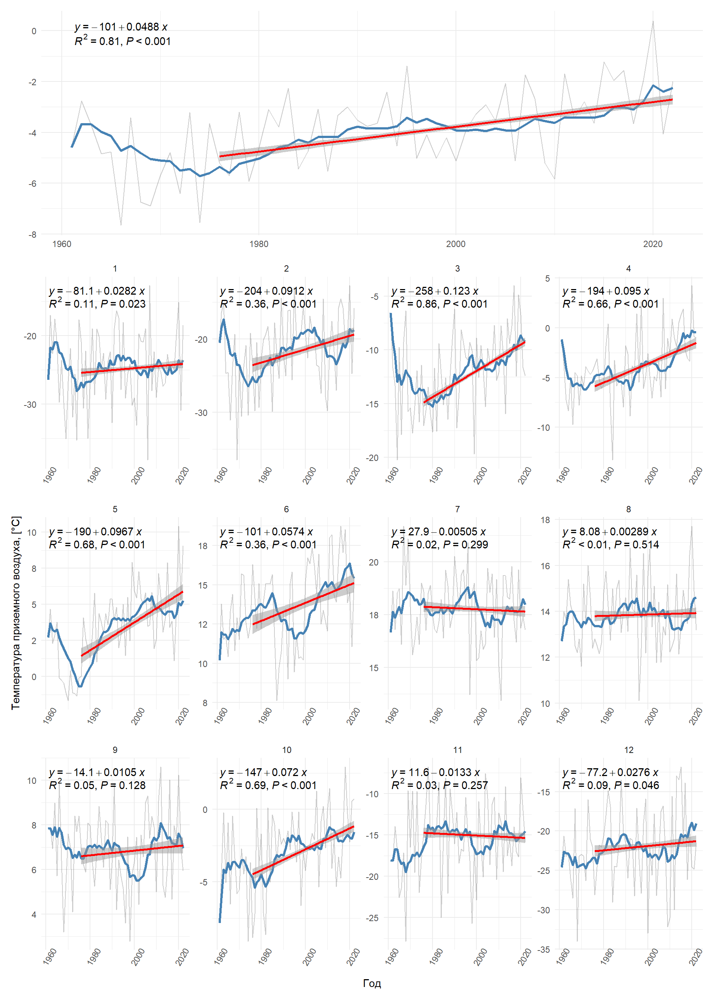
[1] "параметры тренда по станции bakhta сохранены в файл"# данные есть только для 1 метеостанции, поэтому map не использую
tavg_by_season <- season_by_temperature|>
filter(Year != 2023) |>
mutate(Season = factor(Season, labels = c("Осень", "Весна", "Лето", "Зима"))) |>
template(x=Year,
red_line=Tavg_roll_mean,
gray_line = Tavg,
blue_line = Tavg_roll_mean,
y_labs = "Температура приземного воздуха, [\u00B0C]",
col_or_line = "line")+
facet_wrap(.~Season, scales = "free_y")
print(tavg_by_season)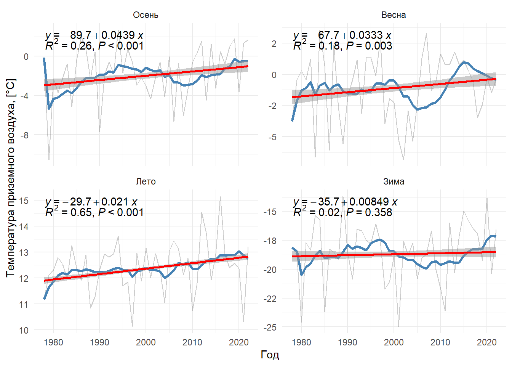
# ggsave(tavg_by_season, file= "images/climate/season/tavg_by_season(by_temperature).png", device = png,
# width = 2000, height = 1500, units = "px", bg = "white")# построит графики для всех метеостанций из вектора station_name:
# station_name |> map(\(x) ann_monthly_graph(seven_station_annualy,
# seven_station_monthly,
# station = x,
# x=Year,
# red_line=T_anomaly_roll_mean_from_1976,
# gray_line = T_anomaly,
# blue_line = T_anomaly_roll_mean,
# y_labs = "Отклонения от среднего за 1961-1990 гг., [\u00B0C]",
# prefix = "t_anomaly",
# col_or_line = "line"), .progress=T)
# пример графика
ann_monthly_graph(seven_station_annualy,
seven_station_monthly,
station = "bakhta",
x=Year,
red_line=T_anomaly_roll_mean_from_1976,
gray_line = T_anomaly,
blue_line = T_anomaly_roll_mean,
y_labs = "Отклонения от среднего за 1961-1990 гг., [\u00B0C]",
prefix = "t_anomaly",
col_or_line = "line",
print_plot = T)[1] "График для станции bakhta сохранен"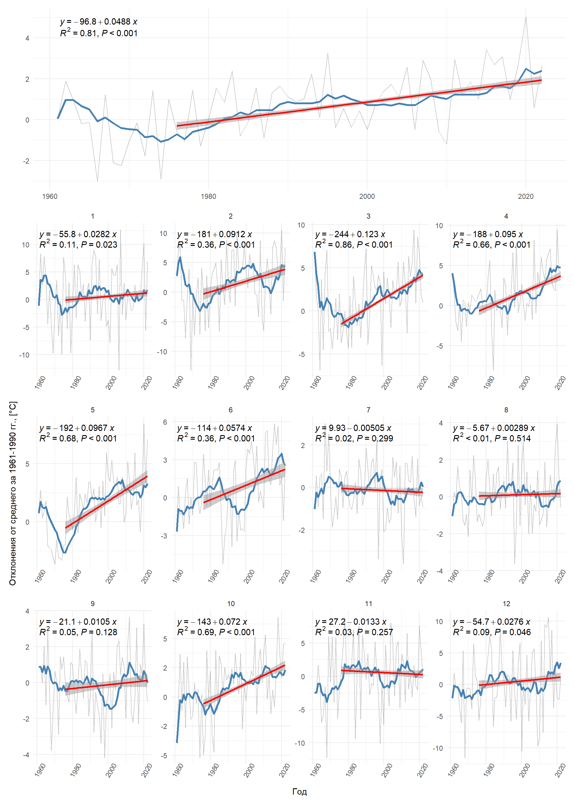
[1] "параметры тренда по станции bakhta сохранены в файл"# есть данные только по 1 станции, поэтому без map
ann_monthly_graph(seven_station_annualy,
seven_station_monthly,
station = "bakhta",
x=Year,
red_line=Pr_roll_mean_from_1976,
gray_line = Pr,
blue_line = Pr_roll_mean,
y_labs = "Сумма осадков, мм",
prefix = "pr",
col_or_line = "col",
print_plot = T)[1] "График для станции bakhta сохранен"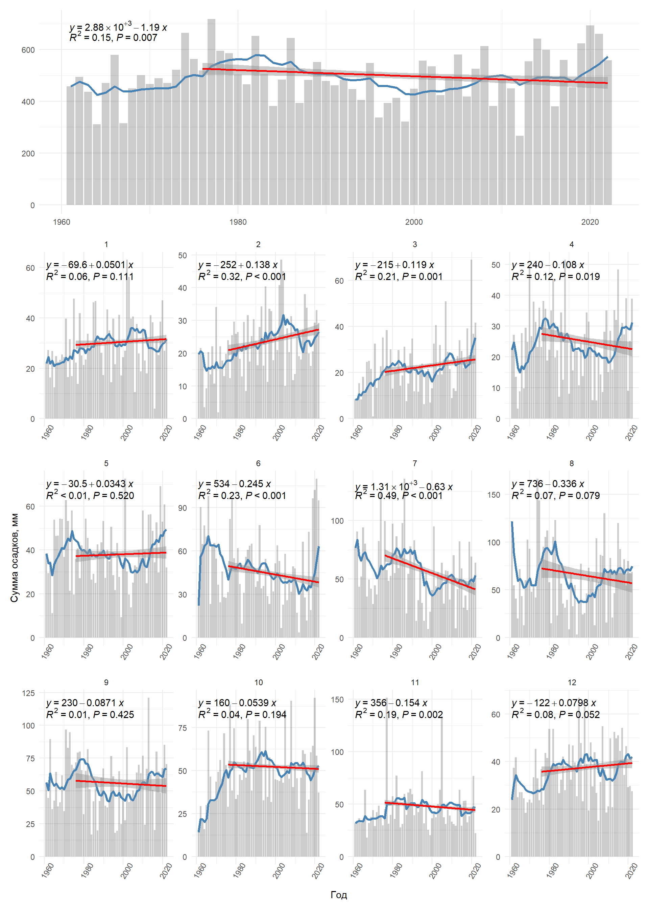
[1] "параметры тренда по станции bakhta сохранены в файл"pr_by_season <- season_by_temperature|>
filter(Year != 2023) |>
mutate(Season = factor(Season, labels = c("Осень", "Весна","Лето", "Зима"))) |>
template(x=Year,
red_line=Pr_sum_roll_mean,
gray_line = Pr_sum,
blue_line = Pr_sum_roll_mean,
y_labs = "Сумма осадков, мм",
col_or_line = "col",
color_of_col = "black")+
facet_wrap(.~Season, scales = "free_y")
print(pr_by_season)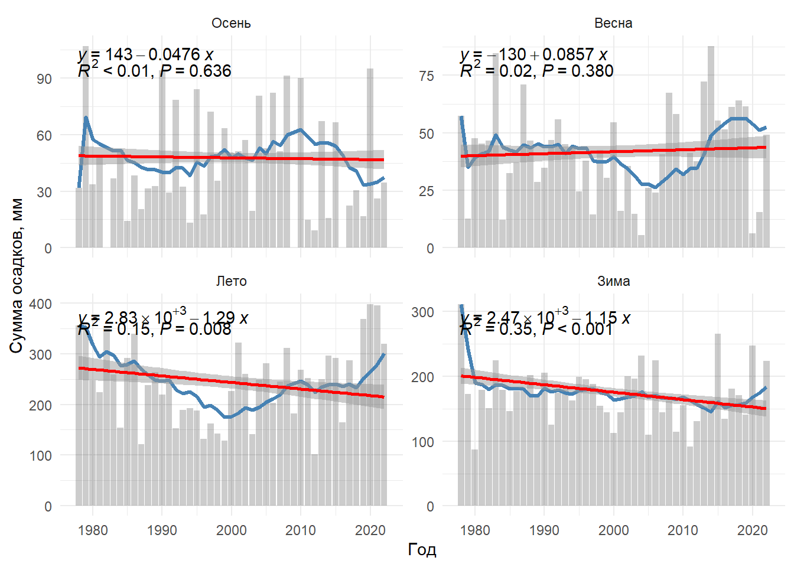
# ggsave(pr_by_season, file= "images/climate/season/pr_by_season(by_temperature).png", device = png,
# width = 2000, height = 1600, units = "px", bg = "white")# данные только для 1 метеостанции
ann_monthly_graph(seven_station_annualy,
seven_station_monthly,
station = "bakhta",
x=Year,
red_line=Pr_anomaly_roll_mean_from_1976,
gray_line = Pr_anomaly,
blue_line = Pr_anomaly_roll_mean,
y_labs = "Отклонения от среднего за 1961-1990 гг., мм",
prefix = "pr_anomaly",
col_or_line = "col",
print_plot = T)[1] "График для станции bakhta сохранен"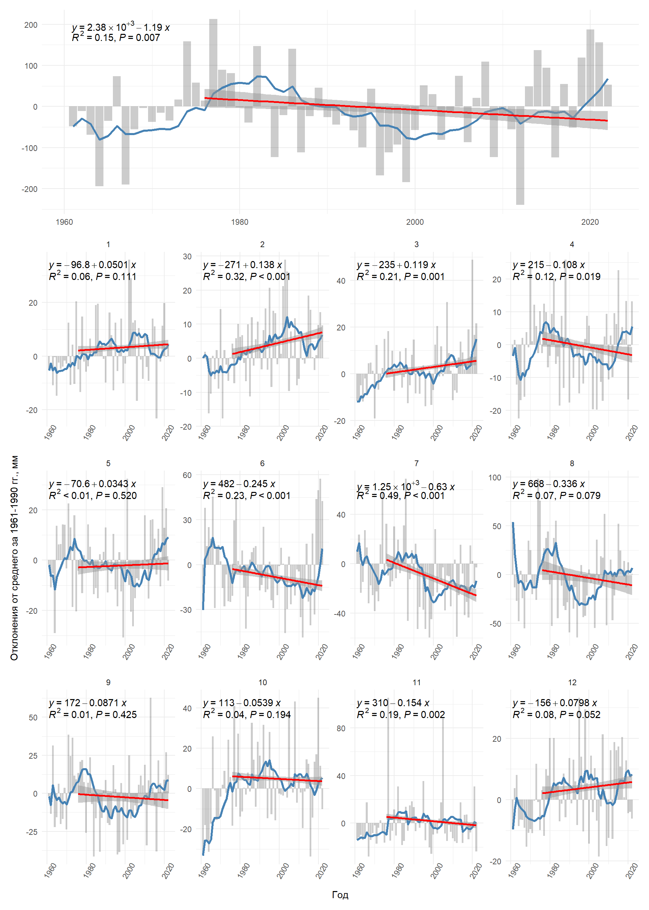
[1] "параметры тренда по станции bakhta сохранены в файл"# данные только для 1 метеостанции
ann_monthly_graph(seven_station_annualy,
seven_station_monthly |> filter(!(Month %in% (6:8))),
station = "bakhta",
x=Year,
red_line=Sn_roll_mean_from_1976,
gray_line = Sn,
blue_line = Sn_roll_mean,
y_labs = "Глубина снежного покрова, см",
prefix = "sn",
col_or_line = "col",
color_of_col = "#4682B4",
print_plot = T)[1] "График для станции bakhta сохранен"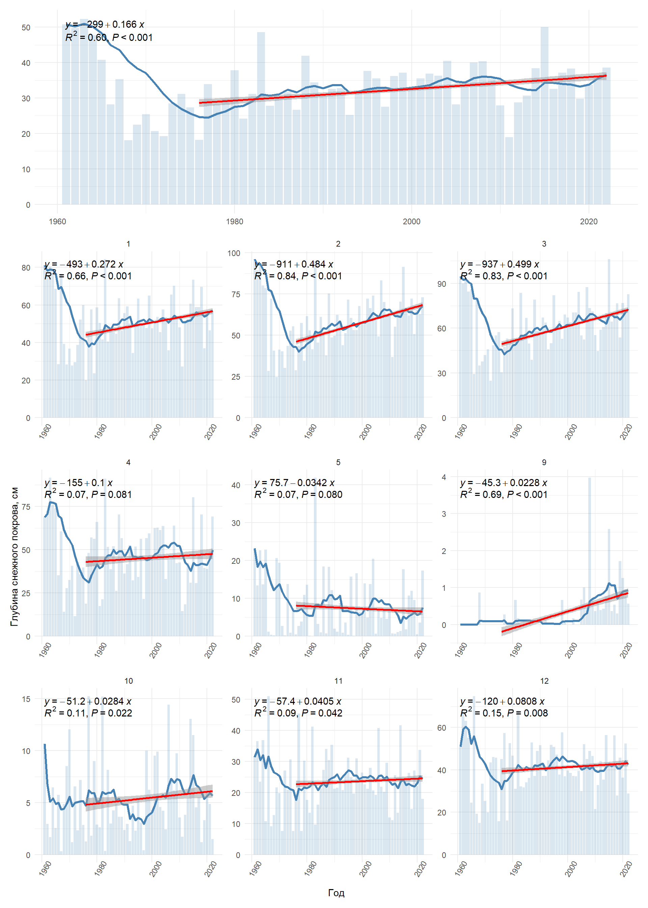
[1] "параметры тренда по станции bakhta сохранены в файл"sn_by_season <- season_by_temperature|>
filter(Year != 2023, Season != "Summer") |>
mutate(Season = factor(Season, labels = c("Осень", "Весна", "Зима"))) |>
template(x=Year,
red_line=Sn_avg_roll_mean,
gray_line = Sn_avg,
blue_line = Sn_avg_roll_mean,
y_labs = "Глубина снежного покрова, см",
col_or_line = "col",
color_of_col = "#4682B4")+
facet_wrap(.~Season, scales = "free_y")
print(sn_by_season)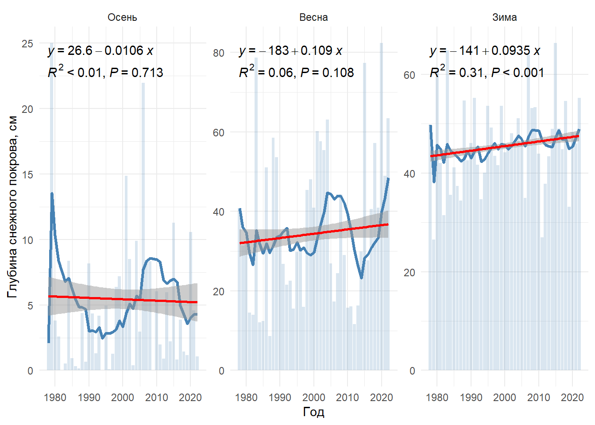
# ggsave(sn_by_season, file= "images/climate/season/sn_by_season(by_temperature).png", device = png,
# width = 2000, height = 1000, units = "px", bg = "white")ann_monthly_graph(seven_station_annualy,
seven_station_monthly |> filter(!(Month %in% (6:8))),
station = "bakhta",
x=Year,
red_line=Sn_anomaly_roll_mean_from_1976,
gray_line = Sn_anomaly,
blue_line = Sn_anomaly_roll_mean,
y_labs = "Глубина снежного покрова, см",
prefix = "sn_anomaly",
col_or_line = "col",
color_of_col = "#4682B4",
print_plot = T)[1] "График для станции bakhta сохранен"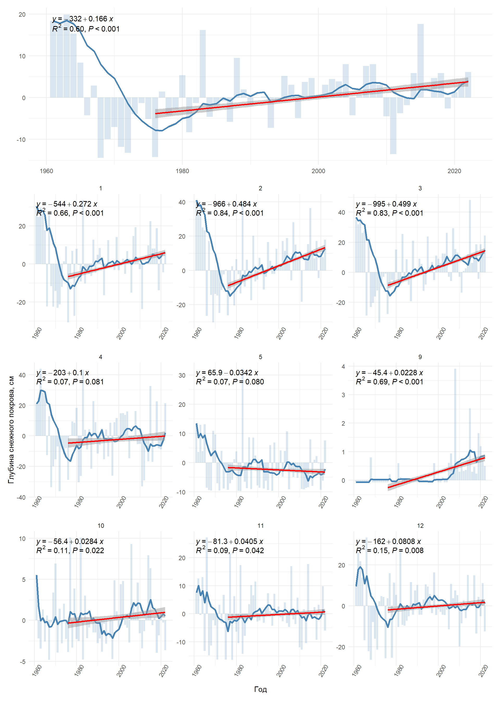
[1] "параметры тренда по станции bakhta сохранены в файл"duration_of_season_by_temp <- season_by_temperature|>
filter(Year != 2023) |>
mutate(Season = factor(Season, labels = c("Осень", "Весна", "Лето", "Зима"))) |>
ggplot(aes(Year, Duration_roll_mean))+
geom_col(aes(y = Duration), fill = "lightblue", alpha = 0.5)+
geom_line(aes(y = Duration_roll_mean), col = "red", linewidth = 1.2)+
facet_wrap(.~Season, scales = "free_y")+
theme_minimal()+
labs(x = "Год",
y = "Продолжительность, дней")
print(duration_of_season_by_temp)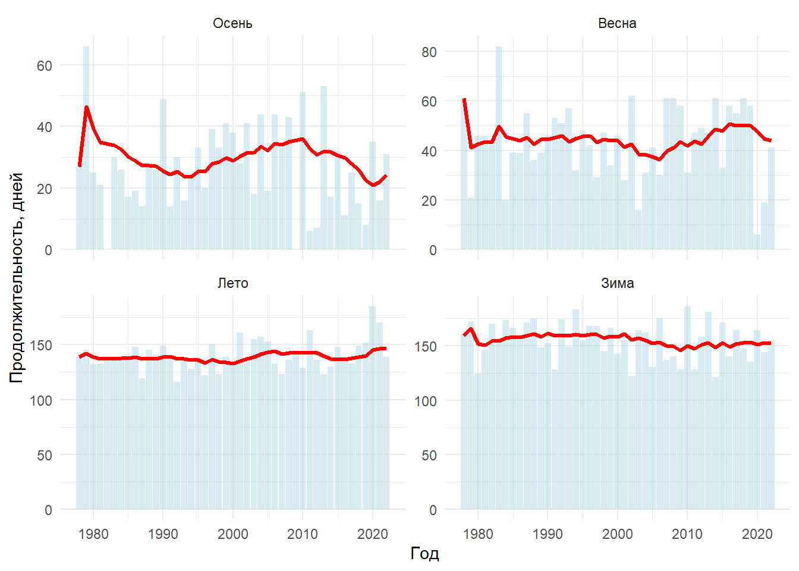
# ggsave(duration_of_season_by_temp, file= "images/climate/season/duration_of_season_by_temp.png", device = png,
# width = 2000, height = 1500, units = "px", bg = "white")melt_freeze_by_month_graph <- ggplot(melt_freeze_all_winter, aes(Year, Melt_freeze))+
geom_col()+
facet_wrap(.~Month)+
theme_minimal()+
labs(x="Год",
y = 'Количество переходов "замерзание-оттаивание"')
print(melt_freeze_by_month_graph)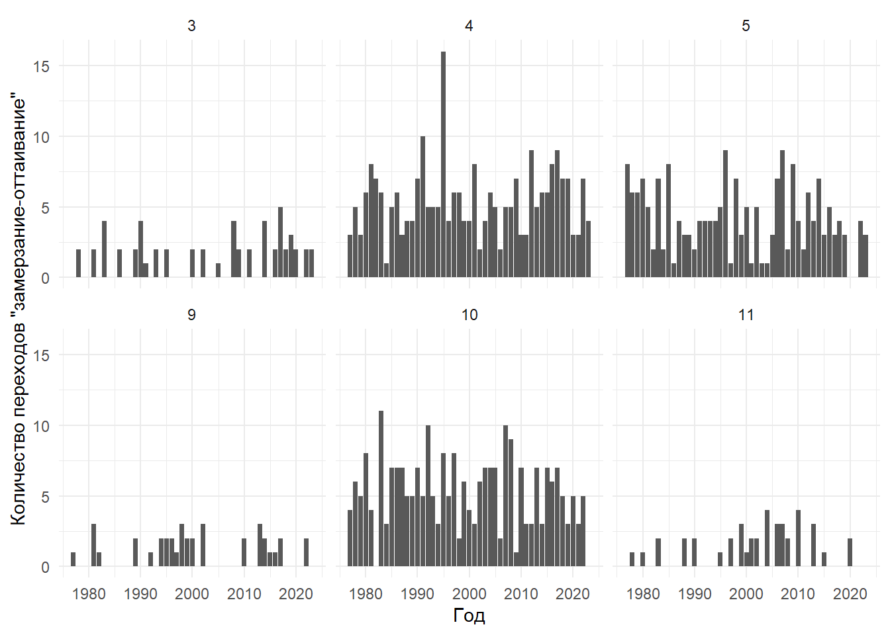
# ggsave(melt_freeze_by_month_graph, file= "images/climate/melt_freeze_by_month_graph.png", device = png,
# width = 2481, height = 1500, units = "px", bg = "white")seven_station_graph <- bad_snow |>
mutate(Station = factor(Station, levels = c("Игарка", "Туруханск", "Верхнеимбатск",
"Бахта", "Бор", "Ворогово", "Ярцево"))) |>
ggplot(aes(Year, count))+
geom_col(fill="lightblue")+
facet_wrap(.~Station, ncol = 1)+
theme_bw()+
labs(x = "Год",
y = "Количество дней, когда снег покрывал <50% поверхности почвы")+
coord_cartesian(xlim = c(2005,2023 ))+
theme_minimal()
print(seven_station_graph)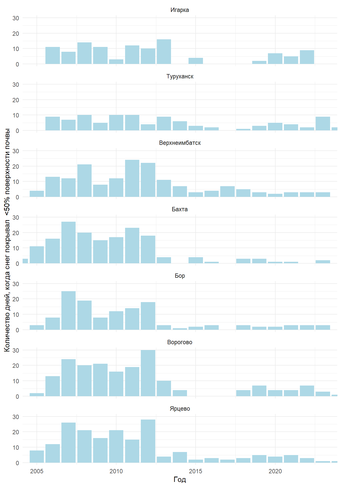
# ggsave(seven_station_graph, filename="images/climate/bad_snow_by_station.png",
# width = 1000, height = 2500, units = "px", bg = "white")